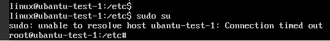
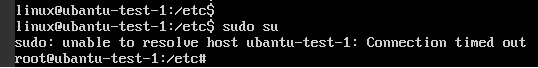

Symptom
When you run the sudo command to switch to user root on an Ubuntu or Debian ECS, the system prompts connection timeout.
Figure 1 Connection timeout


Solution
- Log in to the ECS.
- Run the following command to edit the hosts configuration file:
- Press i to enter editing mode.
- Add the IP address and hostname to the last line of the hosts configuration file.
An example is provided as follows:
If the ECS hostname is hostname and the private IP address of the ECS is 192.168.0.1, add the following statement:
192.168.0.1 hostname
- Press Esc to exit editing mode.
- Run the following command to save the configuration and exit:

To update the hostname of an Ubuntu or Debian ECS, set the value of parameter manage_etc_hosts in the /etc/cloud/cloud.cfg file to false and update the new hostname in the /etc/hosts file. When editing the /etc/hosts file, do not delete the statement in the line where 127.0.0.1 is located. Otherwise, switching from a non-root user to user root will time out.